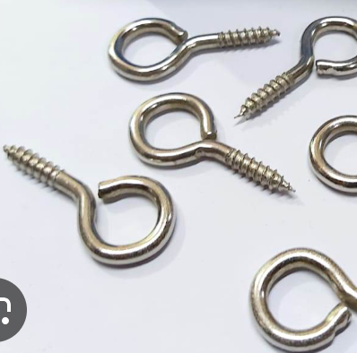
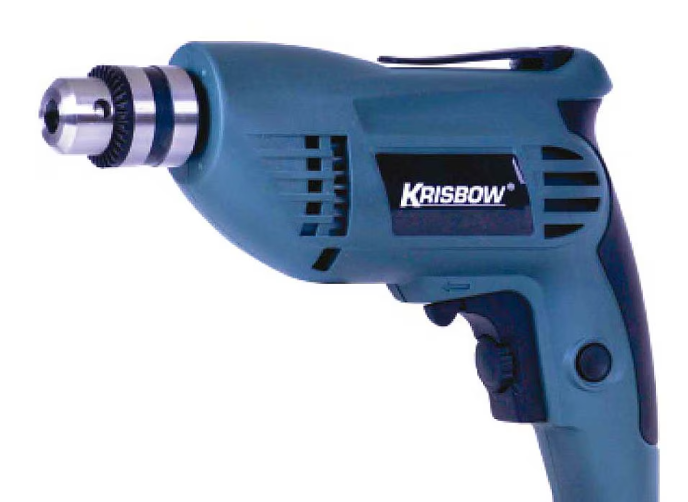
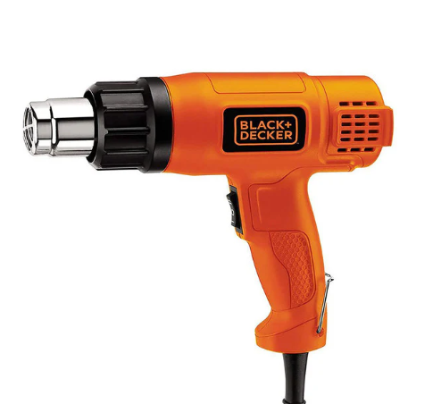
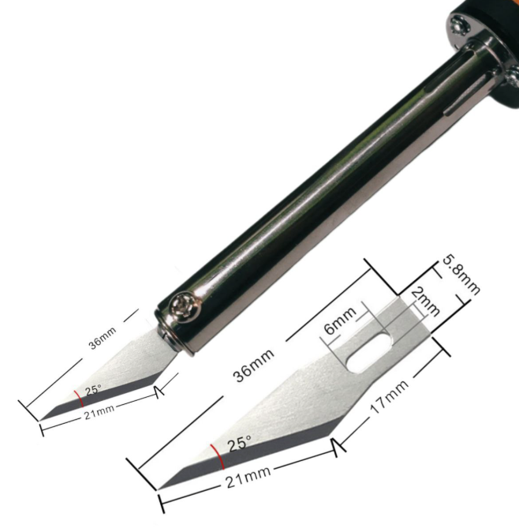
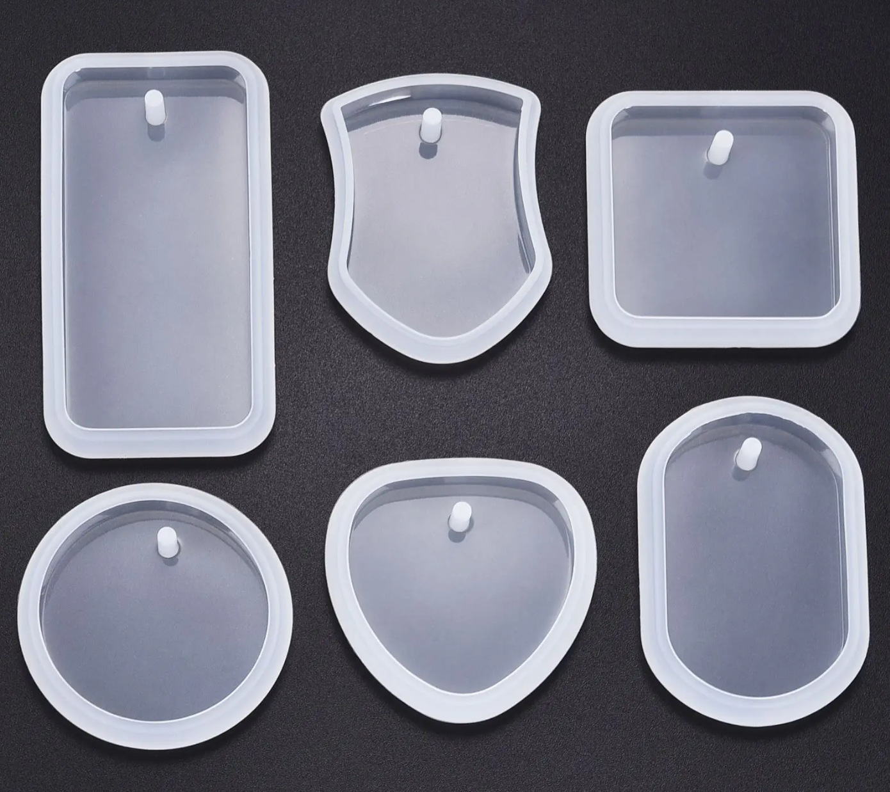

Alat & Bahan Tambahan

Paku Ulir
Paku ulir adalah komponen penting dalam pembuatan gantungan kunci karawo sebagai penghubung antara resin yang sudah mengeras dengan rantai gantungan kunci.
Fungsi & Kegunaan:
Menghubungkan resin dengan rantai gantungan kunci, memberikan kekuatan dan daya tahan pada produk.

Bor
Bor adalah alat bantu yang digunakan untuk membatu membuat lubang untuk paku ulir dengan presisi dan kuat.
Fungsi & Kegunaan:
Membantu membuat lubang pada resin dan bisa menghebat waktu pengerjaan.

Headgun
Headgun adalah alat bantu yang digunakan untuk membantu menghilangkan gelembung pada saat penguangan resin ke cetakan.
Fungsi & Kegunaan:
Memperbagus tampilan dengan menghilangkan gelembung-gelembung kecil yang ada pada resin.

Alat Pemotong Penutup Botol
Alat khusus untuk memotong dan membentuk penutup botol plastik menjadi tempat untuk kain karawo dan qrcode.
Fungsi & Kegunaan:
Memotong penutup botol dengan ukuran yang tepat, membentuk tempat untuk kain karawo dan qrcode.

Cetakan Resin
Cetakan silikon yang digunakan untuk membentuk resin menjadi gantungan kunci dengan bentuk yang sempurna dan halus.
Fungsi & Kegunaan:
Membentuk resin menjadi gantungan kunci, memudahkan proses pelepasan setelah resin mengeras.